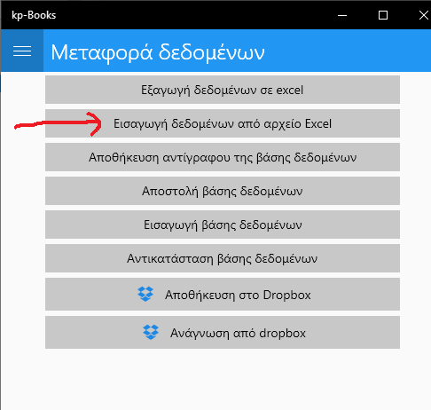

Γεμίζουμε το υπόδειγμα με τα δεδομένα μας και το κάνουμε εισαγωγή στο kp-Books.
Επιλέγουμε “Μεταφορά δεδομένων”
και μετά “Εισαγωγή δεδομένων από αρχείο Excel”
Στην επόμενη οθόνη πατάμε το “Επιλογή αρχείου δεδομένων” και ανοίγει ένας διάλογος για να διαλέξουμε το αρχείο excel που περιέχει τα δεδομένα μας.
Αφού διαλέξουμε το αρχείο, γίνεται η εισαγωγή και τελικά εμφανίζεται το παρακάτω μήνυμα

Το αρχείο πρέπει να έχει την μορφή της παρακάτω εικόνας
Μπορείτε να κατεβάσετε τοΜπορείτε να κατεβάσετε το υπόδειγμα